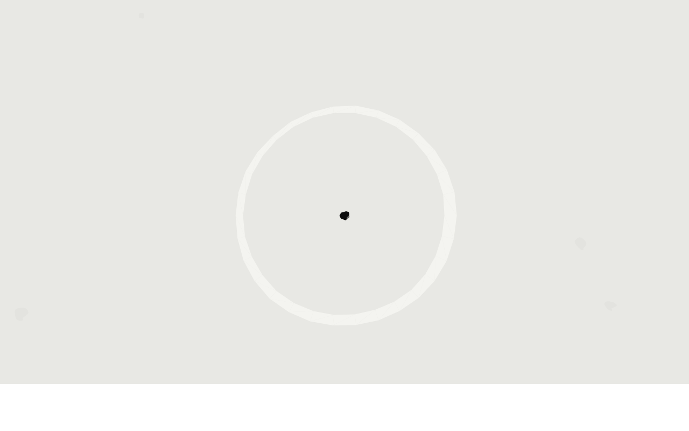
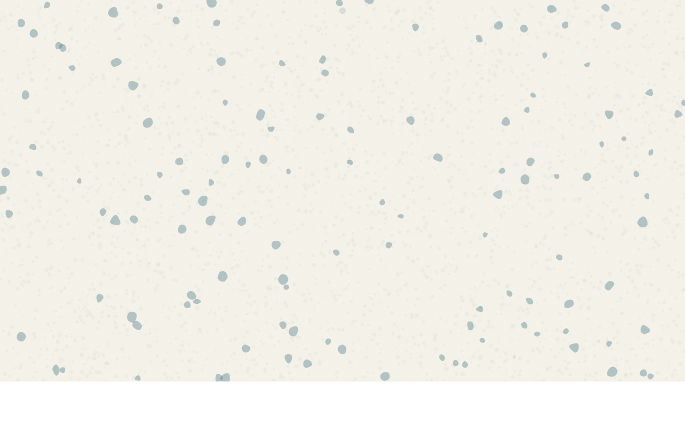
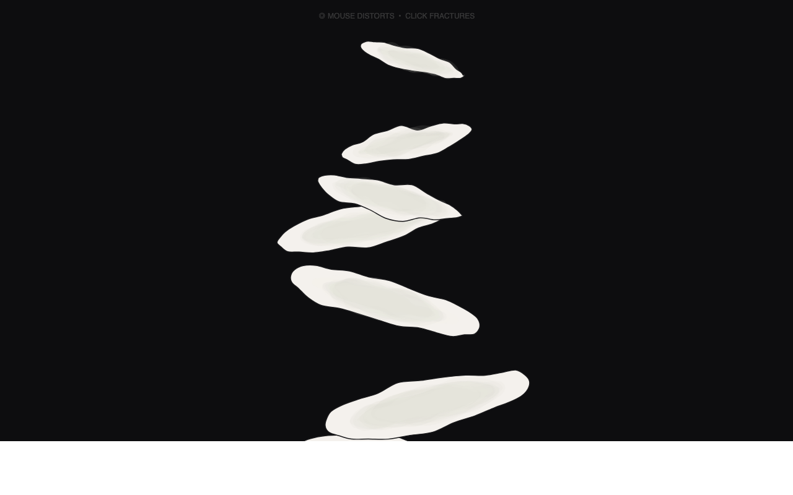
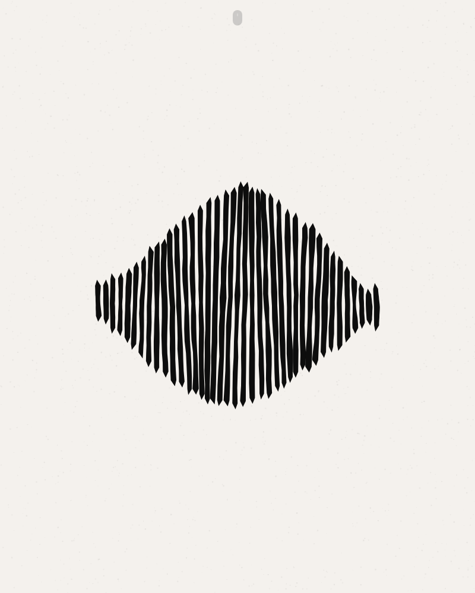
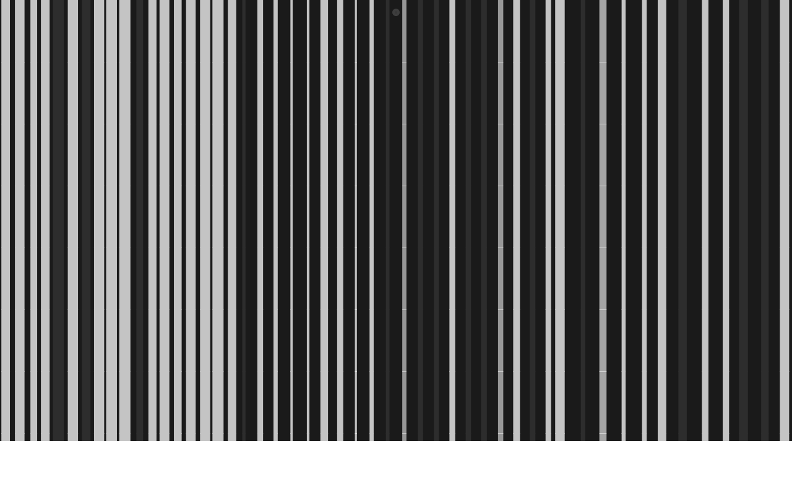
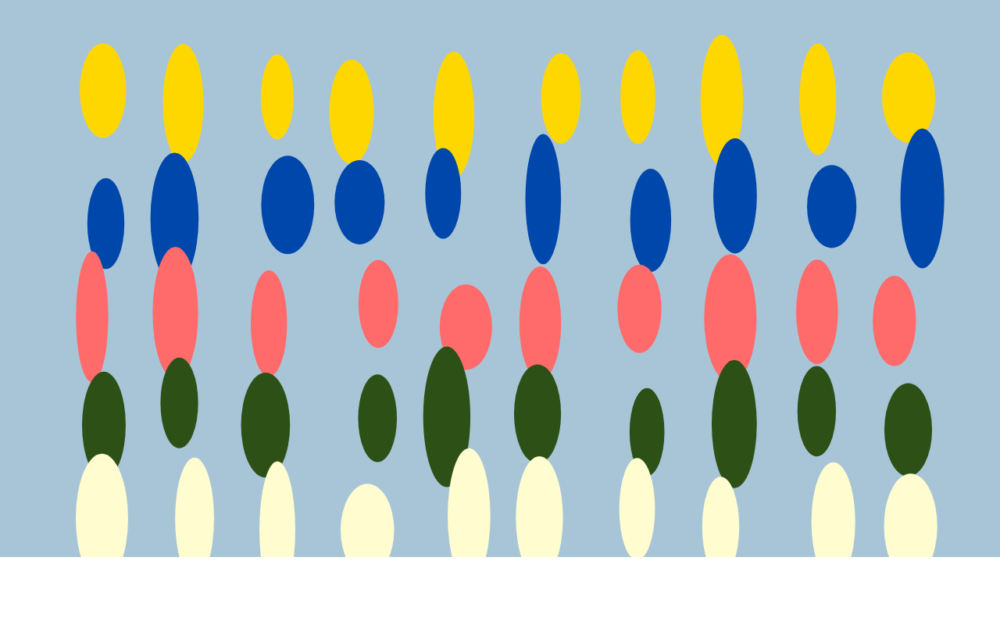
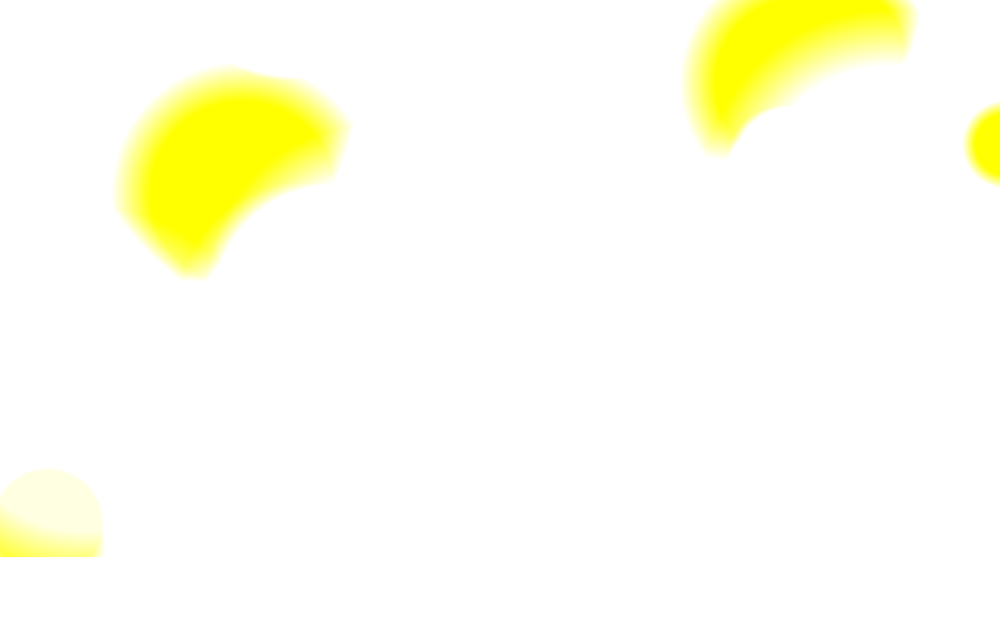

Autonomous generative art

A generative study of organic cellular division constrained by rigid geometry. Black voids pulse and subdivide within wh...

A field of biomorphic capsule-forms emerge and dissolve in overlapping clusters, their soft pill-shaped bodies construct...

Stacked elliptical forms — representing geological strata or ritual cairns — slowly distort, fracture, and reassemble th...

A soundwave-like form undergoes gradual material breakdown — its sharp, rhythmic vertical bars dissolve into scattered p...

A study in perceptual instability through vertical stripe intervals. What appears stable reveals micro-shifts in spacing...
Biomorphic forms orbit a void, splitting and reforming in cycles of cellular mitosis. The piece explores tension between...
A clinical visualization system collapses into organic chaos. Vertical swim lanes — sterile, columnar data structures — ...
A dense field contains a single square that exists at the edge of visual certainty. As the viewer's gaze shifts (tracked...
Six weighted masses orbit two crossing beams, their trajectories gradually decaying into chaos. The piece explores the b...

A system of vertical ellipsoids engaged in continuous physical negotiation—pushing, pulling, and influencing each other'...

A field of overlapping circular forms that slowly drift and phase through each other, creating constantly shifting inter...